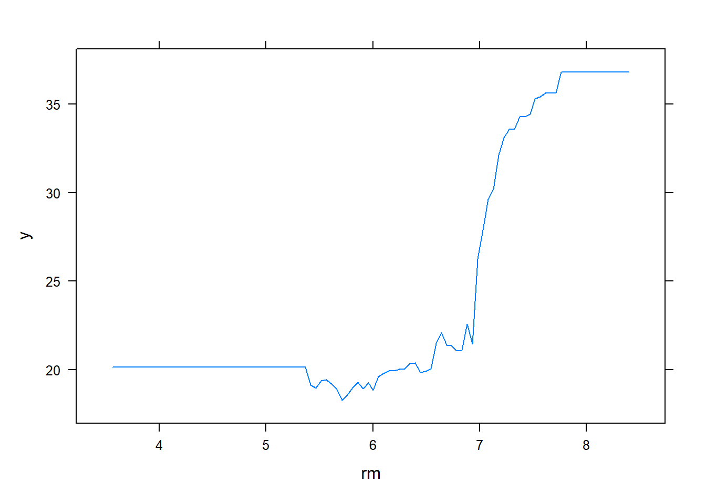
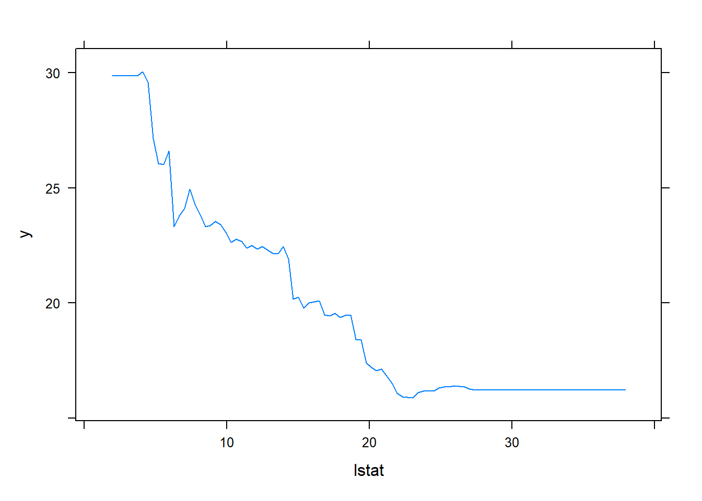

Chapter 11 Boosting
Similar to Bagging but more powerful, where we can improve the predictions from decision trees
It was designed for classification problems (but now we can also apply to regression settings).
In the machine learning world, this method combines the output of many “weak” learners to produce a power “committee”
A classic boosting algorithm for classification is “AdaBoost.M1” (Freund and Schapire 1997)
It can be considered as one of the best off-the-shelf classifiers
Under boosting, trees are not grown independently, but rather sequentially
There are no bootstrap samples with boosting because we build trees on the residuals in a step-by-step manner
In the literature, “fitting the data hard” means we fit a single large decision tree to the data, but we will learn slowly by fitting a decision tree to the residuals (not Y) from the model, which helps to improve the part of the tree that did not perform well in the existing tree structure.
We add this new decision tree into the fitted function with a shrinkage parameter (\(\lambda\)) to slow the process down to add more trees to areas that don’t fit well (also helps prevent overfitting). Hence, each tree after will depend strongly on the trees that have already been grown.
11.1 Regression Boosting
Algorithm for boosting regression trees
Set \(\hat{f}(x) = 0\) and \(r_i = y_i \forall i\) (in the training set)
For \(b = 1, \dots, B\) repeat
Fit a tree \(\hat{f}^b\) with \(d\) splits (\(d + 1\) terminal nodes) to the training data \((X,r)\)
Update \(\hat{f}\) by adding in a shrunken version of the new tree \(\hat{f}(x) \leftarrow \hat{f}(x) + \lambda \hat{f}^b (x)\)
Update the residuals \(r_i \leftarrow r_i - \lambda \hat{f}^b (x_i)\)
Final boosted model \(\hat{f}(x) = \sum_{b=1}^B \lambda \hat{f}^b (x)\)
Boosting has 3 tuning parameters:
- \(B\): the number of trees. boosting can overfit if \(B\) is too large, we can use Cross-validation Fitting to select \(B\)
- \(\lambda\): the shrinkage parameter, which controls the rate at which boosting learns. Typical values are 0.01 or 0.001 (best choice depends on the data at hand). The smaller the \(\lambda\), the larger \(B\) must be to achieve good performance
- \(d\): the number of splits in each tree. \(d = 1\) works well (surprisingly), which we call the tree a “stump.” With \(d =1\), the boosted ensemble is fitting an additive model since each term only involves one variable. More generally, \(d\) is the interaction depth and controls the interaction order of the boosted model (since d splits can involve at most d variables).
11.2 Classification Boosting
For classification problem, consider a two-class classification code such that \(Y \in \{ -1, 1\}\) and a vector of predictor variables, \(X\).
We have a classifier \(G(X)\) that produces prediction that selects either -1 or 1. the error rate on the training sample is
\[ \bar{err} = \frac{1}{n} \sum_{i=1}^n I(y_i \neq G(x_i)) \]
A weak classifier is one whose error rate is only slightly better than random guessing. Now, boosting sequentially applies a weak classification algorithm to produce a sequence of weak classifiers, \(G_m(x), m = 1, \dots, M\) (\(M\) is above \(B\))
The predictions are then combined through a weighted majority vote to produce the final prediction
\[ G(x) = sign (\sum_{m=1}^M \alpha_m G_m (x)) \]
where the weights \(\alpha_m, m = 1, \dots, M\) are computed by the boosting algorithm and give highest influence to the best classifiers
At each boosting step, weights \(w_1, \dots, w_n\) are applied to the training observations \((x_i, y_i), i = 1, \dots, n\).
To start, weights are set equal, \(w_i = \frac{1}{n}\) so there is no preference for the first classification.
For each successive iteration, the observation weights at iteration \(m\) are modified such that those observations that were misclassified by the classifier \(G_{m-1}(x)\) have their weights increased, those that were correctly classified have their weights decreased
As iterations continues, observations that are difficult to classify correctly receive ever-increasing influence. Each successive classifier is forced to concentrate on those training observations that are missed by the previous classifiers in the sequence
Why boosting works so well?
From the perspective of a basis function expansion (3.1:
\[ f(x) = \sum_{m=1}^M \beta_m b(x; \gamma_m) \]
where
\(\beta_m\) are the expansion coefficients
\(b(x, \gamma)\) are simple functions of the multivariate inputs \(x\) and parameters \(\gamma\)
then, boosting is a way of fitting such an additive expansion where the basis functions are the individual classifiers \(G_m(x) \in \{ -1, 1\}\)
To fit this model, we minimize some loss function averaged over the training data (e..g, squared error loss).
\[ \min_{\{\beta_m , \gamma_m \}^M_1} \sum_{i=1}^n L (y_i, \sum_{m=1}^M \beta_m b(x_i; \gamma_m)) \]
For most loss functions \(L(y, f(x))\) and basis functions \(b(x; \gamma)\), the numerical optimization algorithms are usually computationally intensive.
In some cases, a solution is to solve the subproblem of fitting just a single basis function
\[ \min_{\{\beta, \gamma\}} \sum_{i=1}^n L(y_i, \beta b (x_i; \gamma)) \]
Then, we approximate the more general minimization problem by sequentially adding new basis functions to the expansion without adjusting the parameters and coefficients that have already been added. This process is called forward stagewise additive modeling (i.e., at each iteration \(m\), we solve for the optimal basis function \(b(x, \gamma_m)\) and coefficient \(\beta_m\) to add to the current expansion \(f_{m-1}(x)\), which gives \(f_m(x)\) and we repeat the process while previously added terms remain constant)
Example: squared error loss
\[ L(y, f(x)) = (y - f(x))^2 \]
then
\[ \begin{aligned} L(y_i, f_{m-1}(x_i) + \beta_m b(x_i; \gamma_m) &= (y_i - f_{m-1}(x_i) - \beta_mb(x_i; \gamma_m))^2 \\ &= (r_{im} - \beta_mb(x_i; \gamma_m))^2 \end{aligned} \]
where \(r_{im} = y_i - f_{m-1}(x)\) is the residual of the current model on the i-th observation.
The term \(\beta_m b(x; \gamma_m)\) that best fits the current residuals is added to the expansion at each step
11.3 AdaBoost
Ideas of AdaBoost
- It combines “weak learners” (e.g., stumps) to make classifications
- Weights of stumps are different
- Each stump is made sequentially based on previous stump’s mistakes.
AdaBoost.M1
Initialize the observation weights \(w_i = \frac{1}{N}, i = 1, \dots, N\)
For \(m = 1\) to M
Fit a classifier \(G_m(x)\) to the training data with weights \(w_i\)
Calculate \(err_m = \frac{\sum_{i=1}^{N} w_i I(y_i \neq G_m(x_i))}{\sum_{i=1}^N w_i}\)
Calculate \(\alpha_m = \log (\frac{1 - err_m}{err_m})\)
Set \(w_i \leftarrow w_i \times \exp(\alpha_m \times I (y_i \neq G_m(x_i))), i = 1, \dots, N\)
\(G(x) = sign(\sum_{m=1}^M \alpha_m G_m(x))\)
AdaBoost.M1 is equivalent to forward stagewise modeling using the loss function (Hastie, Friedman, and Tibshirani 2001, 10.4)
\[ L(y, f(x)) = \exp(-y f(x)) \]
which is the “exponential loss” (closely related to the binomial negative log-likelihood (deviance), although they have different properties in finite data (real-world) settings )
This loss function is attractive because it facilitates computation
There are more loss functions. Typically we might choose a loss function because
it’s robust to certain properties (e.g., outliers)
it facilitates computation
When a loss function is differentiable, we can make use of the gradient of the loss function to improve the optimization, which is the basis of gradient boosting (“gradient boosting models (GBM)”; formerly, Multiple Additive Regression Trees (MART)).
11.4 Gradient Boosting
The algorithm XGBoost has become one of the standard implementations of gradient boosting, which is present in both R and Python.
It sues Newton-Raphson for its optimization (i.e., a second order Taylor’s approximation for the loss function to make the connection) instead of gradient descent
It improves efficiency for more complicated settings than the original gradient boosting algorithms
Additional regularization and built-in cross-validation and handling of missing data are standard
Compare to AdaBoost: Gradient Boost makes a single leaf, representing an initial guess for the Weights of all of the samples. Similar to AdaBoost, a new tree is made based on previous tree’s errors and gradient boost scales the trees (but by the same amount). Unlike AdaBoost, each tree can be larger than a stump.
Scaling the tree by the Learning Rate makes a small step in the right direction
11.4.1 Gradient Boost Regression
Input: Data \(\{(x_i, y_i)\}^n_{i=1}\) and a differentiable Loss Function \(L(y_i, F(x))\) (e.g., Regression: squared residual: \(0.5(\text{Observed} - \text{Predicted})^2\) )
Step 1: Initialize model with a constant value: \(F_0(x) = \underset{\gamma}{\operatorname{argmin}} \sum_{i=1}^n L(y_i, \gamma)\)
Step 2: for \(m = 1 \to M\) (number of trees):
- Compute the (pseudo) residual: \(r_{im} = - [ \frac{\partial L( y_i, F(x_i))}{\partial F(x_i)}]_{F(x) = F_{m-1}(x)}\) for \(i = 1, \dots, n\) (where \(\frac{\partial L( y_i, F(x_i))}{\partial F(x_i)}\) is the gradient, ergo the name gradient boost)
- Fit a regression tree to the \(r_{im}\) values and create terminal regions \(R_{jm}\) for \(j = 1, \dots, J_m\)
- For \(j = 1, \dots, J_m\) compute \(\gamma_{jm} = \underset{\gamma}{\operatorname{argmin}} \sum_{x_i \in R_{ij}} L(y_i, F_{m-1}(x_i) + \gamma)\)
- Update \(F_m (x) = F_{m-1}(x) + \nu \sum_{j=1}^{J_m} \gamma_{jm} I(x \in R_{jm})\) where \(\nu\) is the learning rate (0 to 1) (smaller value means slower learning rate)
Output: \(F_M(x)\)
library(gbm)
library(ISLR2)
library(tree)
attach(Boston)
set.seed(1)
train <- sample(1:nrow(Boston), nrow(Boston)/2)
boston.test <- Boston[-train, "medv"]
boost.boston <-
gbm(
medv ~ .,
data = Boston[train, ],
distribution = "gaussian", # because this is regression setting
# distribution = "bernoulli", # use this for classification
n.trees = 5000, # number of trees
interaction.depth = 4 # limits the depth of each tree
)
summary(boost.boston) #rm and lstate are most important
## var rel.inf
## rm rm 48.13967682
## lstat lstat 28.93851185
## crim crim 4.49413146
## dis dis 4.23182696
## age age 3.14221169
## nox nox 2.88094283
## black black 2.83238772
## ptratio ptratio 1.93050932
## tax tax 1.80427054
## rad rad 0.77569461
## indus indus 0.73110525
## zn zn 0.07442923
## chas chas 0.0243017011.4.2 Gradient Boost Classification
Input: Data \(\{(x_i, y_i)\}^n_{i=1}\) and a differentiable Loss Function \(L(y_i, F(x))\) (e.g., Classification: negative log likelihood: \(- \sum_{i=1}^N \mathbf{y}_i \times\log (\mathbf{p}) + (1- \mathbf{y}_i) \times \log (1 - \mathbf{p})\) where \(y_i\) is the observed value, equivalently, \(- \text{Observed} \times \log(\text{odds}) + \log(1 + \exp(\log(\text{odds}))\) which is differentiable)
Step 1: Initialize model with a constant value: \(F_0(x) = \underset{\gamma}{\operatorname{argmin}} \sum_{i=1}^n L(y_i, \gamma)\) where \(\gamma\) is a log(odds) value
Step 2: for \(m = 1 \to M\) (number of trees):
- Compute the (pseudo) residual: \(r_{im} = - [ \frac{\partial L( y_i, F(x_i))}{\partial F(x_i)}]_{F(x) = F_{m-1}(x)}\) for \(i = 1, \dots, n\) (where \(\frac{\partial L( y_i, F(x_i))}{\partial F(x_i)}\) is the gradient, ergo the name gradient boost)
- Fit a regression tree to the \(r_{im}\) values and create terminal regions \(R_{jm}\) for \(j = 1, \dots, J_m\)
- For \(j = 1, \dots, J_m\) compute \(\gamma_{jm} = \underset{\gamma}{\operatorname{argmin}} \sum_{x_i \in R_{ij}} L(y_i, F_{m-1}(x_i) + \gamma)\)
- Update \(F_m (x) = F_{m-1}(x) + \nu \sum_{j=1}^{J_m} \gamma_{jm} I(x \in R_{jm})\) where \(\nu\) is the learning rate (0 to 1) (smaller value means slower learning rate)
Output: \(F_M(x)\)
\[ \frac{\sum \text{Residual}_i}{\sum[\text{Previous Prob}_i \times (1 - \text{Previous Prob}_i)]} \]
11.5 Light Gradient Boosting
Reference: Machado, Karray, and de Sousa (2019) and here
Based on new techniques:
- Gradient-based One Side Sampling (GOSS)
- Exclusive Feature Bundling (EFB)
Advantages:
Faster and higher efficiency
Lower Memory
Better accuracy
Can be used with parallel, distributed computing, GPU learning
Can handle big data.
An improvement on XGBoost
Example by lightgbm
library(lightgbm)
data(agaricus.train, package='lightgbm')
train <- agaricus.train
dtrain <- lgb.Dataset(train$data, label = train$label)
model <- lgb.cv(
params = list(
objective = "regression"
, metric = "l2"
)
, data = dtrain
)## [LightGBM] [Warning] Auto-choosing row-wise multi-threading, the overhead of testing was 0.002845 seconds.
## You can set `force_row_wise=true` to remove the overhead.
## And if memory is not enough, you can set `force_col_wise=true`.
## [LightGBM] [Info] Total Bins 214
## [LightGBM] [Info] Number of data points in the train set: 4342, number of used features: 107
## [LightGBM] [Warning] Auto-choosing row-wise multi-threading, the overhead of testing was 0.001203 seconds.
## You can set `force_row_wise=true` to remove the overhead.
## And if memory is not enough, you can set `force_col_wise=true`.
## [LightGBM] [Info] Total Bins 214
## [LightGBM] [Info] Number of data points in the train set: 4342, number of used features: 107
## [LightGBM] [Warning] Auto-choosing row-wise multi-threading, the overhead of testing was 0.000937 seconds.
## You can set `force_row_wise=true` to remove the overhead.
## And if memory is not enough, you can set `force_col_wise=true`.
## [LightGBM] [Info] Total Bins 214
## [LightGBM] [Info] Number of data points in the train set: 4342, number of used features: 107
## [LightGBM] [Info] Start training from score 0.481345
## [LightGBM] [Warning] No further splits with positive gain, best gain: -inf
## [LightGBM] [Info] Start training from score 0.491248
## [LightGBM] [Warning] No further splits with positive gain, best gain: -inf
## [LightGBM] [Info] Start training from score 0.473745
## [LightGBM] [Warning] No further splits with positive gain, best gain: -inf
## [1] "[1]: valid's l2:0.20343+0.000764127"
## [LightGBM] [Warning] No further splits with positive gain, best gain: -inf
## [LightGBM] [Warning] No further splits with positive gain, best gain: -inf
## [LightGBM] [Warning] No further splits with positive gain, best gain: -inf
## [1] "[2]: valid's l2:0.165717+0.00102951"
## [LightGBM] [Warning] No further splits with positive gain, best gain: -inf
## [LightGBM] [Warning] No further splits with positive gain, best gain: -inf
## [LightGBM] [Warning] No further splits with positive gain, best gain: -inf
## [1] "[3]: valid's l2:0.134931+0.00122249"
## [LightGBM] [Warning] No further splits with positive gain, best gain: -inf
## [LightGBM] [Warning] No further splits with positive gain, best gain: -inf
## [LightGBM] [Warning] No further splits with positive gain, best gain: -inf
## [1] "[4]: valid's l2:0.110007+0.00139105"
## [LightGBM] [Warning] No further splits with positive gain, best gain: -inf
## [LightGBM] [Warning] No further splits with positive gain, best gain: -inf
## [LightGBM] [Warning] No further splits with positive gain, best gain: -inf
## [1] "[5]: valid's l2:0.0897115+0.00148545"
## [LightGBM] [Warning] No further splits with positive gain, best gain: -inf
## [LightGBM] [Warning] No further splits with positive gain, best gain: -inf
## [LightGBM] [Warning] No further splits with positive gain, best gain: -inf
## [1] "[6]: valid's l2:0.0733307+0.00158646"
## [LightGBM] [Warning] No further splits with positive gain, best gain: -inf
## [LightGBM] [Warning] No further splits with positive gain, best gain: -inf
## [LightGBM] [Warning] No further splits with positive gain, best gain: -inf
## [1] "[7]: valid's l2:0.0600474+0.00163927"
## [LightGBM] [Warning] No further splits with positive gain, best gain: -inf
## [LightGBM] [Warning] No further splits with positive gain, best gain: -inf
## [LightGBM] [Warning] No further splits with positive gain, best gain: -inf
## [1] "[8]: valid's l2:0.0492893+0.00168788"
## [LightGBM] [Warning] No further splits with positive gain, best gain: -inf
## [LightGBM] [Warning] No further splits with positive gain, best gain: -inf
## [LightGBM] [Warning] No further splits with positive gain, best gain: -inf
## [1] "[9]: valid's l2:0.0405069+0.00168261"
## [LightGBM] [Warning] No further splits with positive gain, best gain: -inf
## [LightGBM] [Warning] No further splits with positive gain, best gain: -inf
## [1] "[10]: valid's l2:0.0333282+0.0017056"
## [LightGBM] [Warning] No further splits with positive gain, best gain: -inf
## [LightGBM] [Warning] No further splits with positive gain, best gain: -inf
## [1] "[11]: valid's l2:0.0275167+0.0017165"
## [LightGBM] [Warning] No further splits with positive gain, best gain: -inf
## [LightGBM] [Warning] No further splits with positive gain, best gain: -inf
## [1] "[12]: valid's l2:0.0228061+0.00173197"
## [LightGBM] [Warning] No further splits with positive gain, best gain: -inf
## [LightGBM] [Warning] No further splits with positive gain, best gain: -inf
## [1] "[13]: valid's l2:0.0189156+0.00175123"
## [LightGBM] [Warning] No further splits with positive gain, best gain: -inf
## [LightGBM] [Warning] No further splits with positive gain, best gain: -inf
## [1] "[14]: valid's l2:0.0157203+0.00167966"
## [LightGBM] [Warning] No further splits with positive gain, best gain: -inf
## [LightGBM] [Warning] No further splits with positive gain, best gain: -inf
## [1] "[15]: valid's l2:0.0131337+0.00163128"
## [LightGBM] [Warning] No further splits with positive gain, best gain: -inf
## [1] "[16]: valid's l2:0.0110208+0.00159361"
## [LightGBM] [Warning] No further splits with positive gain, best gain: -inf
## [1] "[17]: valid's l2:0.00928227+0.00149819"
## [LightGBM] [Warning] No further splits with positive gain, best gain: -inf
## [1] "[18]: valid's l2:0.00786465+0.00142062"
## [1] "[19]: valid's l2:0.00671564+0.00134583"
## [1] "[20]: valid's l2:0.00578033+0.0012865"
## [1] "[21]: valid's l2:0.00499955+0.00121312"
## [LightGBM] [Warning] No further splits with positive gain, best gain: -inf
## [1] "[22]: valid's l2:0.00435034+0.00116644"
## [1] "[23]: valid's l2:0.00382413+0.00113199"
## [LightGBM] [Warning] No further splits with positive gain, best gain: -inf
## [1] "[24]: valid's l2:0.00340385+0.001089"
## [LightGBM] [Warning] No further splits with positive gain, best gain: -inf
## [1] "[25]: valid's l2:0.00303964+0.00105824"
## [1] "[26]: valid's l2:0.00274592+0.00103256"
## [LightGBM] [Warning] No further splits with positive gain, best gain: -inf
## [1] "[27]: valid's l2:0.0025083+0.0010174"
## [1] "[28]: valid's l2:0.00229756+0.000995728"
## [1] "[29]: valid's l2:0.00213457+0.000974289"
## [1] "[30]: valid's l2:0.00199983+0.000959303"
## [1] "[31]: valid's l2:0.00187945+0.000936821"
## [1] "[32]: valid's l2:0.00178762+0.000926426"
## [1] "[33]: valid's l2:0.00169532+0.000905434"
## [1] "[34]: valid's l2:0.00162788+0.000891321"
## [1] "[35]: valid's l2:0.00157471+0.000884293"
## [1] "[36]: valid's l2:0.00148941+0.000848408"
## [1] "[37]: valid's l2:0.00144201+0.000833432"
## [1] "[38]: valid's l2:0.00138472+0.000815984"
## [1] "[39]: valid's l2:0.00133625+0.000799245"
## [1] "[40]: valid's l2:0.00129534+0.000783908"
## [1] "[41]: valid's l2:0.00123877+0.000756225"
## [1] "[42]: valid's l2:0.00120462+0.000739414"
## [1] "[43]: valid's l2:0.00117912+0.000726899"
## [1] "[44]: valid's l2:0.00112602+0.00069656"
## [1] "[45]: valid's l2:0.00108563+0.000673361"
## [1] "[46]: valid's l2:0.00105044+0.000656082"
## [1] "[47]: valid's l2:0.00101495+0.000635755"
## [1] "[48]: valid's l2:0.000981961+0.000616289"
## [1] "[49]: valid's l2:0.000950447+0.00060336"
## [1] "[50]: valid's l2:0.000922003+0.000587209"
## [1] "[51]: valid's l2:0.000896626+0.000574589"
## [1] "[52]: valid's l2:0.000877371+0.0005627"
## [1] "[53]: valid's l2:0.000858695+0.000553383"
## [1] "[54]: valid's l2:0.000843127+0.000544622"
## [1] "[55]: valid's l2:0.000823223+0.000532512"
## [1] "[56]: valid's l2:0.000809958+0.000523934"
## [1] "[57]: valid's l2:0.000791514+0.000514897"
## [1] "[58]: valid's l2:0.000781762+0.000510182"
## [1] "[59]: valid's l2:0.000767174+0.00050103"
## [1] "[60]: valid's l2:0.000754418+0.000492532"
## [1] "[61]: valid's l2:0.000734781+0.000481348"
## [1] "[62]: valid's l2:0.000722189+0.000473815"
## [1] "[63]: valid's l2:0.00070496+0.000463409"
## [1] "[64]: valid's l2:0.000690132+0.000455951"
## [1] "[65]: valid's l2:0.00067878+0.000448851"
## [1] "[66]: valid's l2:0.000665689+0.000441819"
## [1] "[67]: valid's l2:0.000654418+0.00043383"
## [1] "[68]: valid's l2:0.000644114+0.000430402"
## [1] "[69]: valid's l2:0.000633505+0.000422865"
## [1] "[70]: valid's l2:0.000623016+0.000416683"
## [1] "[71]: valid's l2:0.00061008+0.000409842"
## [1] "[72]: valid's l2:0.000598924+0.000403649"
## [1] "[73]: valid's l2:0.000589285+0.00039785"
## [1] "[74]: valid's l2:0.000579913+0.000391408"
## [1] "[75]: valid's l2:0.000567361+0.000384093"
## [1] "[76]: valid's l2:0.000557818+0.000378918"
## [1] "[77]: valid's l2:0.000547081+0.000373364"
## [1] "[78]: valid's l2:0.000537647+0.000367313"
## [1] "[79]: valid's l2:0.000528014+0.000359727"
## [1] "[80]: valid's l2:0.000518134+0.000354966"
## [1] "[81]: valid's l2:0.000507917+0.000348403"
## [1] "[82]: valid's l2:0.000500364+0.000343793"
## [1] "[83]: valid's l2:0.000491649+0.000338621"
## [1] "[84]: valid's l2:0.000484727+0.000334855"
## [1] "[85]: valid's l2:0.000474592+0.000327903"
## [1] "[86]: valid's l2:0.000467556+0.000322853"
## [1] "[87]: valid's l2:0.000458133+0.000317051"
## [1] "[88]: valid's l2:0.000450222+0.000312505"
## [1] "[89]: valid's l2:0.000443537+0.000308884"
## [1] "[90]: valid's l2:0.00043687+0.000304464"
## [1] "[91]: valid's l2:0.000428613+0.000299684"
## [1] "[92]: valid's l2:0.000422767+0.00029546"
## [1] "[93]: valid's l2:0.000415459+0.000291728"
## [1] "[94]: valid's l2:0.0004087+0.00028792"
## [1] "[95]: valid's l2:0.000402658+0.000284252"
## [1] "[96]: valid's l2:0.000396505+0.000281652"
## [1] "[97]: valid's l2:0.000391296+0.000278707"
## [1] "[98]: valid's l2:0.000386102+0.000275288"
## [1] "[99]: valid's l2:0.000379684+0.000271936"
## [1] "[100]: valid's l2:0.000373031+0.000267905"Example by Geeksforgeek (python)
# library(reticulate)
# py_install("lightgbm")
# py_install("pandas")
# py_install("xgboost")#importing standard libraries
import numpy as np
import pandas as pd
from pandas import Series, DataFrame
#import lightgbm and xgboost
import lightgbm as lgb
import xgboost as xgb
#loading our training dataset 'adult.csv' with name 'data' using pandas
data=pd.read_csv('images/adult.data',header=None)
#Assigning names to the columns
data.columns=['age','workclass','fnlwgt','education','education-num','marital_Status','occupation','relationship','race','sex','capital_gain','capital_loss','hours_per_week','native_country','Income']
#glimpse of the dataset
data.head()
# Label Encoding our target variable ## age workclass fnlwgt ... hours_per_week native_country Income
## 0 39 State-gov 77516 ... 40 United-States <=50K
## 1 50 Self-emp-not-inc 83311 ... 13 United-States <=50K
## 2 38 Private 215646 ... 40 United-States <=50K
## 3 53 Private 234721 ... 40 United-States <=50K
## 4 28 Private 338409 ... 40 Cuba <=50K
##
## [5 rows x 15 columns]from sklearn.preprocessing import LabelEncoder,OneHotEncoder
l=LabelEncoder()
l.fit(data.Income) ## LabelEncoder()l.classes_ ## array([' <=50K', ' >50K'], dtype=object)data.Income=Series(l.transform(data.Income)) #label encoding our target variable
data.Income.value_counts()
#One Hot Encoding of the Categorical features ## 0 24720
## 1 7841
## Name: Income, dtype: int64one_hot_workclass=pd.get_dummies(data.workclass)
one_hot_education=pd.get_dummies(data.education)
one_hot_marital_Status=pd.get_dummies(data.marital_Status)
one_hot_occupation=pd.get_dummies(data.occupation)
one_hot_relationship=pd.get_dummies(data.relationship)
one_hot_race=pd.get_dummies(data.race)
one_hot_sex=pd.get_dummies(data.sex)
one_hot_native_country=pd.get_dummies(data.native_country)
#removing categorical features
data.drop(['workclass','education','marital_Status','occupation','relationship','race','sex','native_country'],axis=1,inplace=True)
#Merging one hot encoded features with our dataset 'data'
data=pd.concat([data,one_hot_workclass,one_hot_education,one_hot_marital_Status,one_hot_occupation,one_hot_relationship,one_hot_race,one_hot_sex,one_hot_native_country],axis=1)
#removing duplicate columns
_, i = np.unique(data.columns, return_index=True)
data=data.iloc[:, i]
#Here our target variable is 'Income' with values as 1 or 0.
#Separating our data into features dataset x and our target dataset y
x=data.drop('Income',axis=1)
y=data.Income
#Imputing missing values in our target variable
y.fillna(y.mode()[0],inplace=True)
#Now splitting our dataset into test and train
from sklearn.model_selection import train_test_split
x_train,x_test,y_train,y_test=train_test_split(x,y,test_size=.3)
#The data is stored in a DMatrix object
#label is used to define our outcome variable
dtrain=xgb.DMatrix(x_train,label=y_train)
dtest=xgb.DMatrix(x_test)
#setting parameters for xgboost
parameters={'max_depth':7, 'eta':1, 'silent':1,'objective':'binary:logistic','eval_metric':'auc','learning_rate':.05}
#training our model
num_round=50
from datetime import datetime
start = datetime.now()
xg=xgb.train(parameters,dtrain,num_round) ## [13:31:45] WARNING: D:\bld\xgboost-split_1634712635879\work\src\learner.cc:576:
## Parameters: { "silent" } might not be used.
##
## This could be a false alarm, with some parameters getting used by language bindings but
## then being mistakenly passed down to XGBoost core, or some parameter actually being used
## but getting flagged wrongly here. Please open an issue if you find any such cases.stop = datetime.now()
#Execution time of the model
execution_time_xgb = stop-start
execution_time_xgb
#datetime.timedelta( , , ) representation => (days , seconds , microseconds)
#now predicting our model on test set ## datetime.timedelta(seconds=1, microseconds=176379)ypred=xg.predict(dtest)
ypred
#Converting probabilities into 1 or 0 ## array([0.4097403 , 0.36875448, 0.6589913 , ..., 0.0436888 , 0.0436888 ,
## 0.0436888 ], dtype=float32)for i in range(0,9769):
if ypred[i]>=.5: # setting threshold to .5
ypred[i]=1
else:
ypred[i]=0
#calculating accuracy of our model
from sklearn.metrics import accuracy_score
accuracy_xgb = accuracy_score(y_test,ypred)
accuracy_xgb
# Light GBM## 0.8626266762206981train_data=lgb.Dataset(x_train,label=y_train)
#setting parameters for lightgbm
param = {'num_leaves':150, 'objective':'binary','max_depth':7,'learning_rate':.05,'max_bin':200}
param['metric'] = ['auc', 'binary_logloss']
#Here we have set max_depth in xgb and LightGBM to 7 to have a fair comparison between the two.
#training our model using light gbm
num_round=50
start=datetime.now()
lgbm=lgb.train(param,train_data,num_round)## [LightGBM] [Warning] Find whitespaces in feature_names, replace with underlines
## [LightGBM] [Info] Number of positive: 5481, number of negative: 17311
## [LightGBM] [Warning] Auto-choosing col-wise multi-threading, the overhead of testing was 0.004856 seconds.
## You can set `force_col_wise=true` to remove the overhead.
## [LightGBM] [Info] Total Bins 697
## [LightGBM] [Info] Number of data points in the train set: 22792, number of used features: 90
## [LightGBM] [Info] [binary:BoostFromScore]: pavg=0.240479 -> initscore=-1.150055
## [LightGBM] [Info] Start training from score -1.150055
## [LightGBM] [Warning] No further splits with positive gain, best gain: -inf
## [LightGBM] [Warning] No further splits with positive gain, best gain: -inf
## [LightGBM] [Warning] No further splits with positive gain, best gain: -inf
## [LightGBM] [Warning] No further splits with positive gain, best gain: -inf
## [LightGBM] [Warning] No further splits with positive gain, best gain: -inf
## [LightGBM] [Warning] No further splits with positive gain, best gain: -inf
## [LightGBM] [Warning] No further splits with positive gain, best gain: -inf
## [LightGBM] [Warning] No further splits with positive gain, best gain: -inf
## [LightGBM] [Warning] No further splits with positive gain, best gain: -inf
## [LightGBM] [Warning] No further splits with positive gain, best gain: -inf
## [LightGBM] [Warning] No further splits with positive gain, best gain: -inf
## [LightGBM] [Warning] No further splits with positive gain, best gain: -inf
## [LightGBM] [Warning] No further splits with positive gain, best gain: -inf
## [LightGBM] [Warning] No further splits with positive gain, best gain: -inf
## [LightGBM] [Warning] No further splits with positive gain, best gain: -inf
## [LightGBM] [Warning] No further splits with positive gain, best gain: -inf
## [LightGBM] [Warning] No further splits with positive gain, best gain: -inf
## [LightGBM] [Warning] No further splits with positive gain, best gain: -inf
## [LightGBM] [Warning] No further splits with positive gain, best gain: -inf
## [LightGBM] [Warning] No further splits with positive gain, best gain: -inf
## [LightGBM] [Warning] No further splits with positive gain, best gain: -inf
## [LightGBM] [Warning] No further splits with positive gain, best gain: -inf
## [LightGBM] [Warning] No further splits with positive gain, best gain: -inf
## [LightGBM] [Warning] No further splits with positive gain, best gain: -inf
## [LightGBM] [Warning] No further splits with positive gain, best gain: -inf
## [LightGBM] [Warning] No further splits with positive gain, best gain: -inf
## [LightGBM] [Warning] No further splits with positive gain, best gain: -inf
## [LightGBM] [Warning] No further splits with positive gain, best gain: -inf
## [LightGBM] [Warning] No further splits with positive gain, best gain: -inf
## [LightGBM] [Warning] No further splits with positive gain, best gain: -inf
## [LightGBM] [Warning] No further splits with positive gain, best gain: -inf
## [LightGBM] [Warning] No further splits with positive gain, best gain: -inf
## [LightGBM] [Warning] No further splits with positive gain, best gain: -inf
## [LightGBM] [Warning] No further splits with positive gain, best gain: -inf
## [LightGBM] [Warning] No further splits with positive gain, best gain: -inf
## [LightGBM] [Warning] No further splits with positive gain, best gain: -inf
## [LightGBM] [Warning] No further splits with positive gain, best gain: -inf
## [LightGBM] [Warning] No further splits with positive gain, best gain: -inf
## [LightGBM] [Warning] No further splits with positive gain, best gain: -inf
## [LightGBM] [Warning] No further splits with positive gain, best gain: -inf
## [LightGBM] [Warning] No further splits with positive gain, best gain: -inf
## [LightGBM] [Warning] No further splits with positive gain, best gain: -inf
## [LightGBM] [Warning] No further splits with positive gain, best gain: -inf
## [LightGBM] [Warning] No further splits with positive gain, best gain: -inf
## [LightGBM] [Warning] No further splits with positive gain, best gain: -inf
## [LightGBM] [Warning] No further splits with positive gain, best gain: -inf
## [LightGBM] [Warning] No further splits with positive gain, best gain: -inf
## [LightGBM] [Warning] No further splits with positive gain, best gain: -inf
## [LightGBM] [Warning] No further splits with positive gain, best gain: -inf
## [LightGBM] [Warning] No further splits with positive gain, best gain: -infstop=datetime.now()
#Execution time of the model
execution_time_lgbm = stop-start
execution_time_lgbm
#predicting on test set## datetime.timedelta(microseconds=236834)ypred2=lgbm.predict(x_test)
ypred2[0:5] # showing first 5 predictions
#converting probabilities into 0 or 1## array([0.41010961, 0.37295682, 0.62708169, 0.25244322, 0.03311815])for i in range(0,9769):
if ypred2[i]>=.5: # setting threshold to .5
ypred2[i]=1
else:
ypred2[i]=0
#calculating accuracy
accuracy_lgbm = accuracy_score(ypred2,y_test)
accuracy_lgbm## 0.8610912068789026y_test.value_counts()## 0 7409
## 1 2360
## Name: Income, dtype: int64from sklearn.metrics import roc_auc_score
#calculating roc_auc_score for xgboost
auc_xgb = roc_auc_score(y_test,ypred)
auc_xgb
#calculating roc_auc_score for light gbm. ## 0.7682318915839873auc_lgbm = roc_auc_score(y_test,ypred2)
auc_lgbm## 0.7621663471590896comparison_dict = {
"accuracy score":(accuracy_lgbm,accuracy_xgb),
"auc score":(auc_lgbm,auc_xgb),
"execution time":(execution_time_lgbm,execution_time_xgb)
}
#Creating a dataframe ‘comparison_df’ for comparing the performance of Lightgbm and xgb.
comparison_df = DataFrame(comparison_dict)
comparison_df.index= ['LightGBM','xgboost']
comparison_df## accuracy score auc score execution time
## LightGBM 0.861091 0.762166 0 days 00:00:00.236834
## xgboost 0.862627 0.768232 0 days 00:00:01.17637911.6 XGBoost
Extreme Gradient Boosting
11.7 Partial Dependence Plots
Consider a subvector \(X_S\) of \(l < p\) of the input predictor space \(X\), indexed by \(S \subset \{ 1, \dots, p \}\)
Let \(C\) be the complement such that \(S \cup C = \{1, \dots, p \}\)
We expect that \(f(X) = f(X_S, X_C)\) and define the partial dependence of \(f(X)\) on \(X_S\) to be
\[ f_S(X_S) = E_{X_C} f(X_S, X_C) \]
which is the marginal average of \(f\)
It can serve as a useful description of the effect of the chosen subset on \(f(X)\) when elements of \(X_S\) do not have strong interactions with elements of \(X_C\)
We can estimate this expectation by
\[ \bar{f}_S(X_S) = \frac{1}{n} \sum_{i=1}^n f(X_S, x_{iC}) \]
where \(\{ x_{1C}, \dots, x_{nC}\}\) are the values of \(X_C\) occurring in the training data
- This can be computationally intensive to evaluate (but, for decision trees \(\bar{f}_S(X_S)\) can be computed efficiently from the tree itself).
The interpretation of the partial dependence plots is that they represent the effect of \(X_S\) on \(f(X)\) after accounting for the average effects of the other variables \(X_C\) on \(f(X)\)
You can’t assume that this present the effect of \(X_S\) \(f(X)\) ignoring the effects of \(X_C\) (unless \(X_S \perp X_C\))
Partial dependence plots for the 2 most important variables, showing marginal effect of the variables on the response after integrating out the other variables (i.e., conditioned on other variables)
plot(boost.boston, i = "rm") # median house prices increase with rm
plot(boost.boston, i = "lstat") # median house prices decrease with lstate 
Examine test MSE
attach(Boston)
set.seed(1)
train <- sample(1:nrow(Boston), nrow(Boston)/2)
yhat.boost <-
predict(boost.boston, newdata = Boston[-train, ], n.trees = 5000)
mean((yhat.boost - boston.test) ^ 2)## [1] 19.37033The above analysis used \(\lambda\) = 0.001 (shrinkage parameter)
But we can try other values
boost.boston <-
gbm(
medv ~ .,
data = Boston[train, ],
distribution = "gaussian",
n.trees = 5000,
interaction.depth = 4,
shrinkage = 0.2,
verbose = F
)
yhat.boost <-
predict(boost.boston, newdata = Boston[-train, ], n.trees = 5000)
mean((yhat.boost - boston.test) ^ 2)## [1] 18.94809Lower shrinkage parameter (faster learning) might lead to lower test MSE